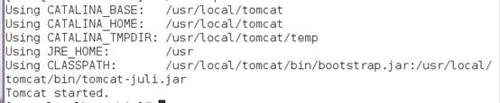

TOMCAT_VERSION:apache-tomcat-7.0.78
一、解压压缩包
tar -zxv -f apache-tomcat-7.0.29.tar.gz
mv apache-tomcat-7.0.29 /usr/local/tomcat
二、启动Tomcat
执行以下操作：
Cd /usr/local/tomcat/bin/
./startup.sh //启动tomcat
出现以上信息说明已成功启动。
三、防火墙开放8080端口
增加8080端口到防火墙配置中，执行以下操作：
[root@linuxidc ~]# vi + /etc/sysconfig/iptables
#增加以下代码
-A RH-Firewall-1-INPUT -m state --state NEW -m tcp -p tcp --dport 8080 -j ACCEPT
四、重启防火墙
[root@linuxidc java]# service iptables restart
五、检验Tomcat安装运行
通过以下地址查看tomcat是否运行正常：
http://10.1.15.151:8080/
看到tomcat系统界面，说明安装成功！
六、停止Tomcat
/usr/local/tomcat/bin/shutdown.sh //停止tomcat